Relax
Relax
Relax
Relax
Разминка прямо на стуле Перед началом разминки отодвиньтесь от стола, сместите таз на край стула, выпрямите спину, расправьте и опустите плечи. Отрегулируйте стул так, чтобы колени были согнуты под прямым углом, а стопы стояли на полу. Некоторые упражнения измеряются в количестве раз, другие — в дыхательных циклах. Один цикл — это вдох и выдох. Дышите глубоко и размеренно, концентрируйтесь на ощущениях тела.
Поверните голову вправо, опустите подбородок вниз. Медленно переведите его к левому плечу и поднимите голову. Представьте, что чертите по груди полукруг подбородком. Выполните упражнение в обратную сторону и повторите ещё два раза.
Выдвиньте подбородок вперёд, затем втяните его в себя и тянитесь макушкой к потолку. Почувствуйте, как растягивается задняя сторона шеи. Повторите упражнение ещё три раза.
Выдвиньте плечи вперёд и зафиксируйте на 2–3 секунды, чтобы почувствовать растяжение. Затем отведите плечи назад и согните руки в локтях. Удерживая плечи опущенными, потяните локти назад. Вернитесь в исходное положение и поднимите плечи к ушам. Задержите на 2–3 секунды и опустите.
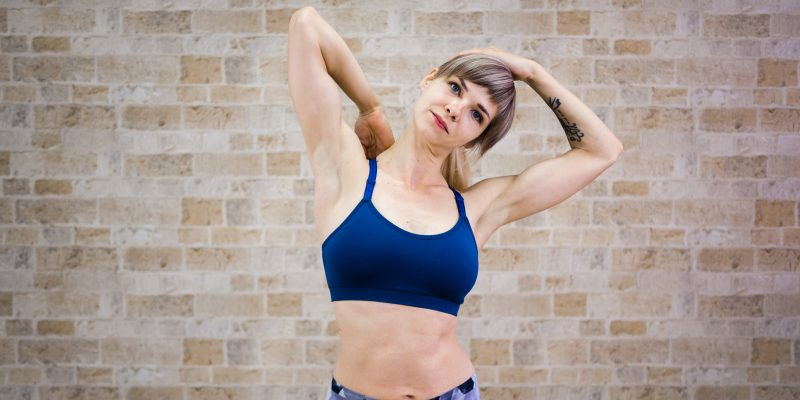
Поднимите правую руку, согните в локте и поместите ладонь на лопатку. Левую руку положите на правую сторону головы рядом с ухом. Слегка надавите кистью на голову, наклоняя её влево. Удерживайте положение три дыхательных цикла, затем поменяйте руки и повторите.
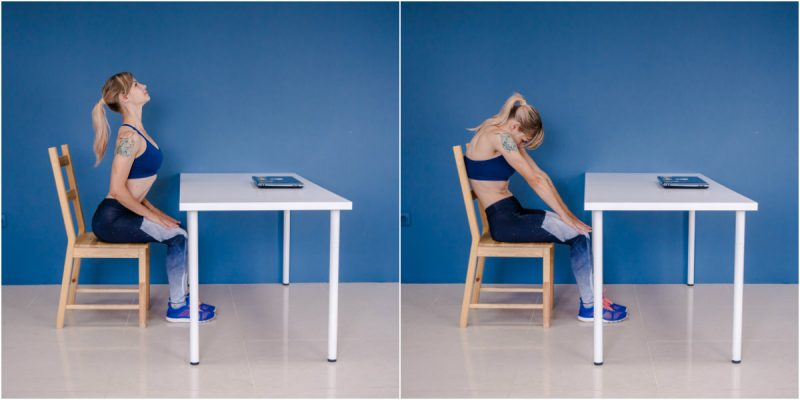
Положите руки на колени, вытяните позвоночник вверх. На вдохе прогните спину, вытяните шею, но не заламывайте её назад, взгляд направьте в потолок. На выдохе округлите спину, переведите плечи вперёд, прижмите подбородок к груди. Повторите упражнение ещё два раза.
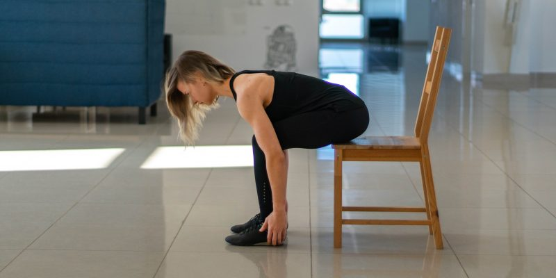
Наклонитесь вперёд и лягте животом на колени, руки свободно опустите. Затем наклоните таз вперёд и вытяните спину в одну прямую линию, тянитесь макушкой в противоположную стену. Задержитесь в положении на пять дыхательных циклов.
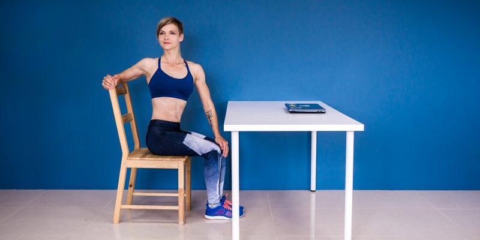
Положите ладони на колени, вытяните позвоночник вверх. Поверните корпус вправо, положите правую руку на спинку стула, левую оставьте на колене. Не меняйте положение таза, поворачивайте только корпус. Не поднимайте плечи, старайтесь вытягивать позвоночник вверх, стремясь макушкой к потолку. Задержитесь в положении на три дыхательных цикла и повторите в другую сторону.
Упражнения из этого комплекса можно выполнять в любой одежде за исключением коротких юбок и слишком узких вещей.
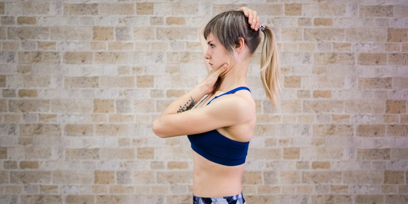
Встаньте прямо, опустите и расправьте плечи. Положите правую ладонь на темя. Левой обхватите подбородок и сдвиньте его назад. Одновременно тянитесь макушкой вверх, растягивая заднюю сторону шеи. Задержитесь в положении на три дыхательных цикла, отдохните и повторите ещё раз.
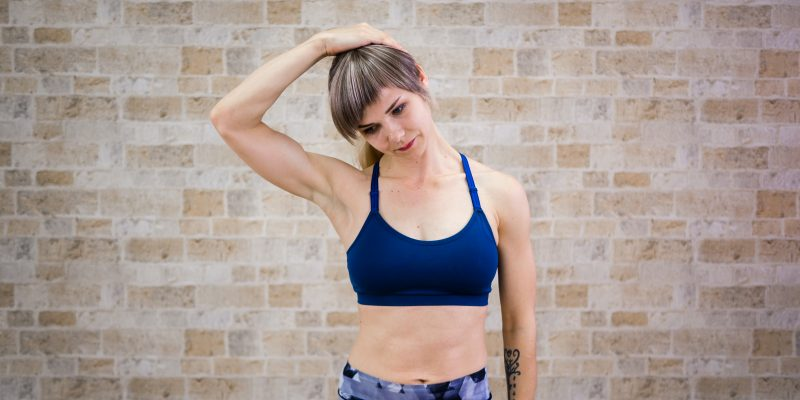
Встаньте прямо, опустите и расправьте плечи. Положите правую руку на левую сторону головы, чтобы пальцы располагались рядом с ухом. Наклоните голову вперёд и вбок, почувствуйте растяжение в боковой поверхности шеи. С помощью руки немного усильте давление, левое плечо тяните вниз. Сохраняйте положение три дыхательных цикла, затем поменяйте стороны и повторите.
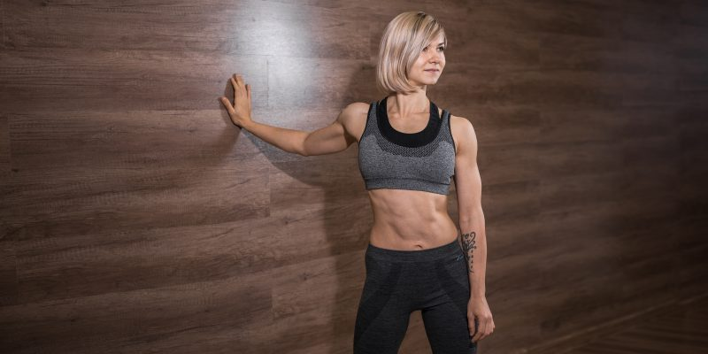
Встаньте правым боком к стене на расстоянии шага от неё. Поставьте правую руку на стену на уровне плеча, слегка согните локоть. Отверните корпус, таз и голову от стены. Почувствуйте растяжение в мышцах груди рядом с подмышкой. Задержитесь на три дыхательных цикла и повторите упражнение в другую сторону.
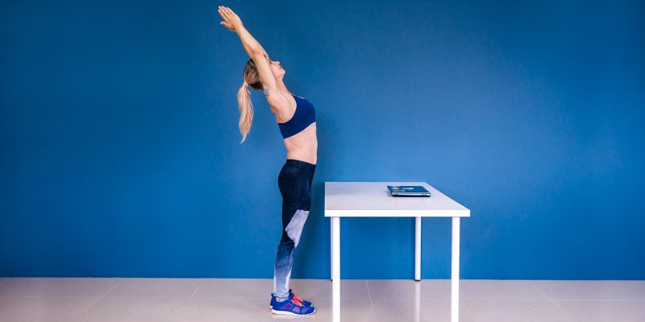
Встаньте прямо, ноги вместе, подтяните колени. На вдохе поднимите руки вверх, соедините ладони и прогнитесь назад. Старайтесь больше прогибаться в грудном отделе, а не в пояснице. Чтобы защитить нижнюю часть спины, во время прогиба сильно напрягите ягодицы. На выдохе вернитесь в исходное положение и повторите ещё два раза.
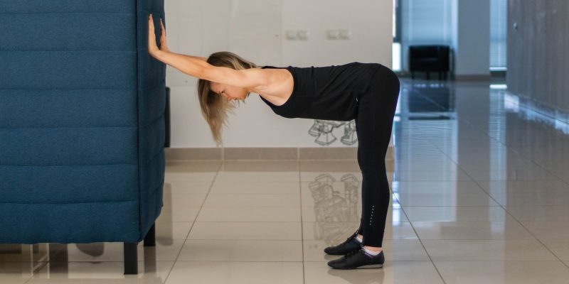
Отойдите на шаг от стены, поставьте ноги на ширине бёдер. Наклоните прямой корпус вперёд до параллели с полом и поставьте ладони на стену. Вытяните позвоночник в одну линию от таза до головы, не сгибайте колени. Удерживайте положение три дыхательных цикла.
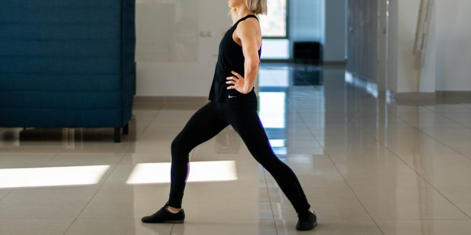
Встаньте прямо, ноги вместе, руки на поясе. Сделайте неглубокий выпад правой ногой. Её стопу направьте вперёд, левую поверните под углом 45°. Потянитесь макушкой в потолок, таз направьте строго вперёд. Из этого положения подкрутите таз и отклоните прямую спину назад. Почувствуйте растяжение в верхней части бедра, рядом с тазом. Задержитесь на три дыхательных цикла и повторите с другой ноги.
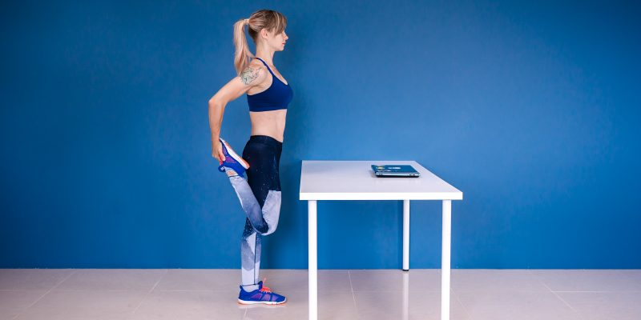
Лучше выполнять это упражнение рядом со столом или стеной, чтобы не упасть при потере равновесия. Встаньте прямо, ноги вместе. Согните правую ногу в колене и заведите голень назад. Захватите правой рукой носок правой ноги и притяните его к ягодице. Почувствуйте растяжение в передней части бедра. Если этого недостаточно, подкрутите таз. Задержитесь на три дыхательных цикла и повторите с другой ноги.
Во время выполнения следите за дыханием, все движения выполняйте плавно и мягко. Задерживайтесь в каждой позе на 3–5 секунд, чтобы почувствовать растяжение.
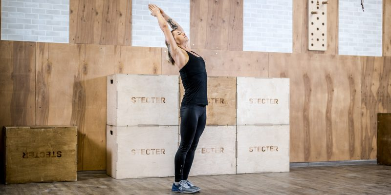
Встаньте прямо, ноги вместе. Подтяните колени, напрягите ягодицы. На вдохе вытяните руки над головой, прогнитесь в грудном отделе.
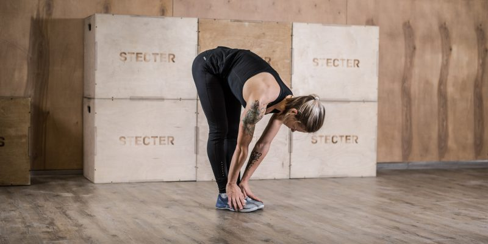
Наклонитесь вперёд настолько низко, насколько получается сохранять прямую спину. Если возможно, поставьте руки на стопы, если нет — на голени. Почувствуйте растяжение задней поверхности бедра. Сделайте три мягких пружинящих движения, углубляя позу.
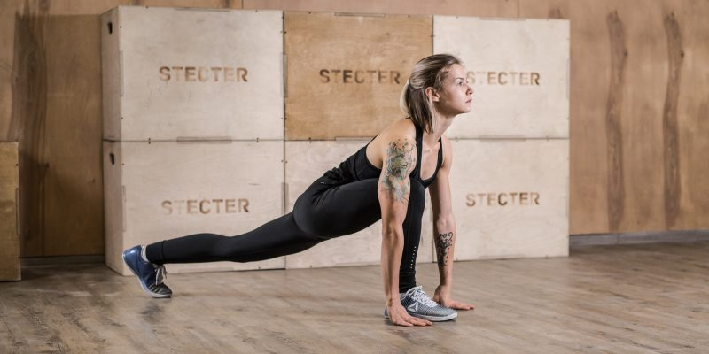
Сделайте глубокий выпад вперёд правой ногой, поставьте руки по обеим сторонам от стопы. Выпрямите спину, расправьте грудь, чуть поднимите подбородок, смотрите вперёд и вверх. Сделайте три мягких пружинящих движения, затем поменяйте ноги и повторите. В конце снова поменяйте ноги, чтобы правая оказалась впереди.
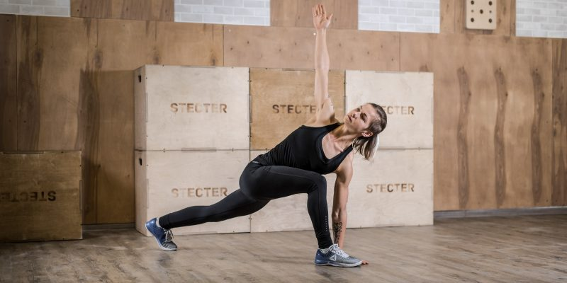
Из предыдущей позиции разверните корпус вправо. Левую руку оставьте на полу, правую направьте в потолок. Не меняйте положение таза и ног, поворачивайте только корпус. Вернитесь в обычный глубокий выпад, поменяйте ноги и повторите в другую сторону: левая нога впереди, разворот корпуса в левую сторону. В конце упражнения встаньте в упор лёжа.
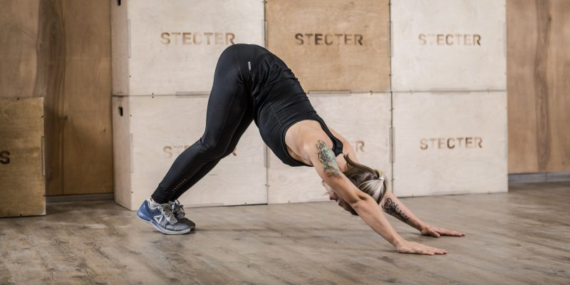
Подайте таз вверх, вытяните руки, выпрямите позвоночник от таза до шеи, голову держите на одной линии со спиной. Если не получается выпрямить спину из-за боли в задней части бедра, приподнимите пятки от пола и согните колени. Почувствуйте, как расслабляется спина и растягиваются мышцы рук.
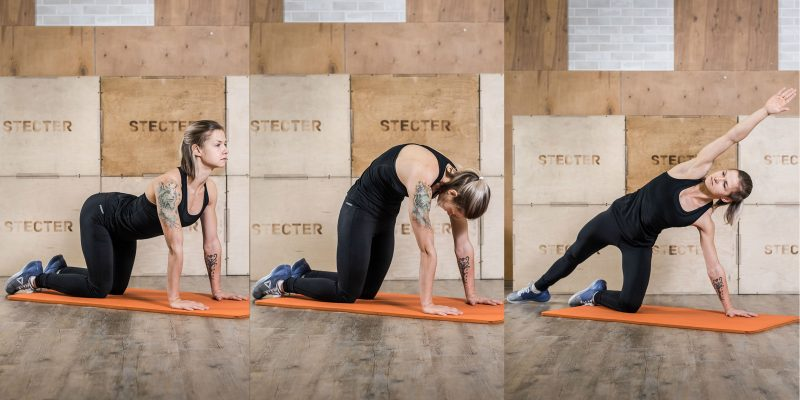
Встаньте на четвереньки. На вдохе прогните спину, на выдохе выгните её дугой и наклоните голову. Повторите движение три раза. Затем разверните корпус вправо. Левые руку и ногу оставьте в прежнем положении, правые вытяните в диагональ, растягивая бок. Вернитесь в исходное положение на четвереньках и повторите в другую сторону.
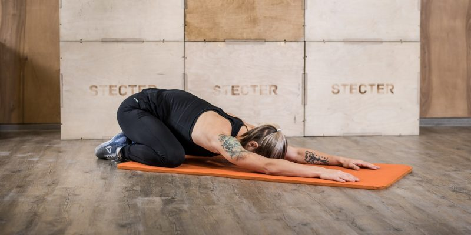
Подайте таз назад и положите его на пятки, а живот — на колени. Вытяните спину и руки, коснитесь лбом пола. Почувствуйте, как растягивается спина.
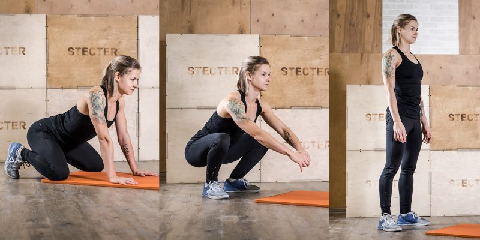
Чуть раздвиньте колени, поставьте стопы на подушечки. Подайте таз назад и выйдите в глубокий присед. Держите спину прямой, руки вытяните перед собой. Сделайте три пружинящих движения в приседе, а затем медленно выпрямитесь. Вы хорошо размялись, разогнали кровь и растянули забитые мышцы. Можете снова приступать к работе.